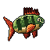
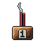
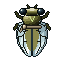
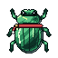
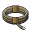

Roll-Call
Roll-Call
Crafts
Storehouse
Bench
Vows
Tester
Herb Terraces
Sphere Lord 3 · Lv 97
Willow Moss131 an hour
Spirit Wood7 an hour
One for every 20 cuttings
Herb pouch
0 / 40
Paused while played
Playing now
Bai Lin
Reed Shallows
At the post 9 h 24 m
River Minnow43 an hour

Reed Perch17 an hour
Fish pouch
400 / 400
Full · idle 2 h 45 m

Settle
Switch
Second Disciple
Willow Path West
At the post 5 h 18 m
Willow Moss102 an hour
Spirit Wood5 an hour
One for every 20 cuttings
Herb pouch
400 / 400
Full · idle 1 h 22 m
Settle
Switch
Wen Ruo
Whispering Bamboo
At the post 1 h 36 m

Reed Cicada63 an hour

Jade Scarab
Opens at Netting Lv 12
Insect pouch
100 / 1,000
Full in 14 h 17 m
Settle
Switch
Soonest-full first. Jade Chance fills with Finesse; past 100% the gold Abundance bar adds extra.
Settle all· 2 pouches full
✓
+1 more
Settling all adds 927 goods. Tap one to take 50.
Auto-Settle off

20Hemp Cord
36 an hour
20 / 20 · full
Collect
Next point at 35 · a 2nd apprentice at 60